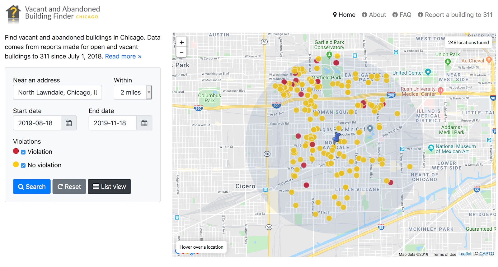

About this project
- What is this?
- How does it work?
- Who is it for?
- Why did you make it?
- Where did you get your data from?
- How many vacant buildings are there?
- Were there problems with the data?
- What did you use to build it?
- Credits
- Press
What is this?
The Vacant and Abandoned Building Finder is a tool for helping people and organizations find buildings in Chicago that are not in use and potentially hazardous to the neighborhood around them.
How does it work?
With the tools on the left column, you can find buildings that are open and unsecured, have fire damage, or are in use by non-residents (gangs, children, homeless, etc). You can also search around an address or intersection and by the date the building was reported.
On the right side the buildings are potted on a map of Chicago. Each point is clickable and will show you details about when the building was reported, where on the lot it is located, where an open entry point is (if any) as well as a picture of the building itself (courtesy of Google's street view). Additionally, there is a list of resources anyone can use to find more information on the building, or to provide an updated report to 311.

In addition to the building data, I also added in demographic data by neighborhood. This allows anyone to compare each neighborhood to see the correlation between vacant and abandoned buildings and the neighborhoods that surround them. Demographics include poverty rate, unemployment rate, population, and median income.
Who is it for?
This tool is free and for anyone who is interested in vacant and abandoned buildings in Chicago. It was built with simplicity in mind; you don't have to be an expert in real estate or Chicago building policy to use it. That being said, it can definitely be used by someone who is, and I hope that it proves to be a useful tool.
It could be used in the following ways:
- As an educational tool for the general public to make them aware of the number of vacant and abandoned buildings in Chicago and where they are.
- By firefighters who want to check if a burning building has people (non-residents) reported in it to determine if they should perform a rescue. If there's no one in the building, they won't have to risk their lives.
- By community development organizations to track neighborhood trends in foreclosed and abandoned housing and compare it to demographic data.
- By journalists as a research tool.
- By the City to more efficiently track vacant and abandoned buildings and manage 311 reports.
- By neighborhood groups and concerned citizens to locate and report vacant and abandoned buildings around them.
- By homeless individuals looking for a place to squat (not that this site condones illegal activity - it's just a possibility).
- By urban adventurers looking for cool and interesting buildings to explore and photograph (again, this is probably illegal)
Why did you make it?
I am not too much of an expert on the subject of vacant and abandoned buildings, but the data seemed very interesting to me. I created a simple version of this map in April of 2011 and noticed that it quickly became one of the most visited pages on my site.
When the Apps for Metro Chicago contest was announced, I decided that this tool would be a great candidate for it, so I refined it, expanded it, and spun it off in to it's own site: chicagobuildings.org. It is now a finalist for the Community round I eagerly await the results of the competition.
Where did you get your data from?
The building data comes from Chicago's 311 reporting service which can be found here. The raw Fusion Tables data in KML format can be seen and downloaded here.
The demographics data comes from a report by the Greater Chicago Food Depository published on September 21st, 2011. This report can be found here. The data in KML format can be downloaded here.
How many vacant buildings are there?
Since Jan 1st 2010, there have been 18,949 unique (based on address) vacant buildings reported in Chicago by 311. On average, 19 new buildings are reported every day.
Were there problems with the data?
There were! The 311 data from the City is published in a very raw format. A lot of fields were not normalized (had multiple values that meant the same thing), and an entire column (Is this building dangerous or hazardous?) was completely blank for all rows. I compensated for this with a PHP script that pulls the data from the City's Data Portal and cleans up specific columns based on keywords I found that were common in meaning. For data fields that were blank, I flagged them as 'unknown'.
The 311 Service Requests - Vacant and Abandoned Buildings Reported dataset has been published since January 2011, and I hope the City plans on revisiting it and cleaning up the data soon.
What did you use to build it?
This site is built with HTML, CSS, Javascript and Google's Fusion Tables and Maps API. The data is stored in Fusion Tables and is updated every week by a PHP script I wrote to import the data directly from the City of Chicago Data Portal.
Technologies used:
If you are interested, all the code for this project is up on github:
- vacant-building-finder (this site)
- vacant-building-finder-import
Credits
This site was built, designed and hosted entirely by Derek Eder in his own free time for no money. Special thanks to Cristina Sladana from Cook County Commissioner Fritchey's Office, Danielle DuMerer from Chicago's Department of Innovation and Technology, Bill McCaffrey from Chicago's Department of Buildings and Chet Jackson from the West Humboldt Park Development Council for answering all my annoying questions.
Also a big thanks to my wife Aya for designing the logo, proofing and giving design feedback and Nick Rougeux for all his continuous sage style (CSS) advice.
Press
Since launching in late September 2011, some great articles have been written about this site:
- Mapping Chicago's Vacant Buildings on the Webitects Blog by Derek Eder
- Chicagobuildings.org maps vacant and abandoned buildings using open government data on govfresh by Alex Howard